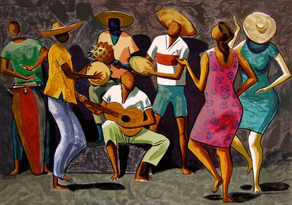

A música brasileira é um dos aspectos mais expressivos e complexos da cultura nacional. Ela não apenas acompanha a história do país, mas também revela processos de resistência, mistura cultural e inovação contínua. Ao falar de música no Brasil, falamos de um campo vastíssimo, que vai das tradições indígenas milenares aos gêneros urbanos contemporâneos.C
Raízes indígenas, africanas e europeias A formação musical brasileira começa antes da própria ideia de Brasil existir.
Ao longo do tempo, a música serviu como: expressão de resistência afro-brasileira (samba, jongo, maracatu); ferramenta política, especialmente na ditadura (MPB, Tropicália); afirmação das periferias urbanas (funk, rap, trap); preservação de tradições regionais (catira, congadas, folias de reis). A música brasileira nasce da vida social do povo e reflete suas lutas, alegrias e dores.
A arte brasileira é um reflexo sensível da diversidade cultural, histórica e social do país. Assim como a música, ela nasce do encontro entre matrizes indígenas, africanas e europeias, mas se desdobra em expressões únicas, que dialogam tanto com tradições populares quanto com movimentos internacionais. Ao falar de arte no Brasil, é preciso considerar não apenas as obras consagradas, mas também os saberes tradicionais, o artesanato, a arte urbana e as produções contemporâneas que desafiam fronteiras.